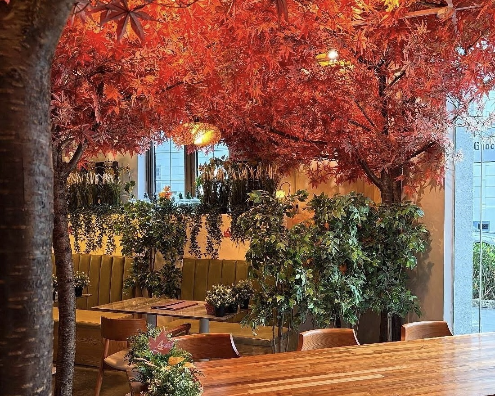
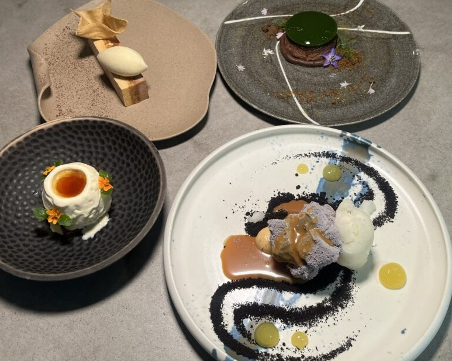
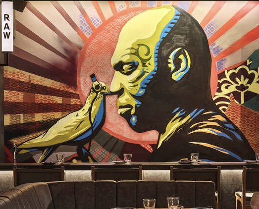

Food
From well-known hawker stalls and hip 24-hour café to hidden gems that offers comfort cuisine until morning, this section offers you the best late-night eats. Discover where teenagers and night owls go to recharge, and sample the city's after-hours flavors, whether you're craving hot noodles after clubbing or sweet desserts to cap off the evening.

24H Cafes & Chill Spots
Craving a nice treat after a long day ? Explore the cozy cafes and aesthetic late-night hangouts perfect for studying and chilling with your friends. These cafes will offer the best ambience and vibes that hit just right after dark.

Late Night Hawker Eats
No better way to dive into the true heritage of Singapore culture than having true hawker food. This section will guide you to the best local spots where sizzling woks and bustling crowds will keep the night alive. Discover the affordable and authentic dishes of Singapore right here.

Desserts & Sweet Spots
Devoted to sugar fixes that taste even better at night, from handmade gelato to molten lava cakes. These dessert locations are popular with Gen-Zs.

Fushion Flavours
Find the best global fusion eats, from Japanese and Korean bites to Middle Eastern wraps and Mexican tacos. Inspired by cultures around the world, theses restaurant will not disappoint your taste buds. Theses will be the best spots for adventurous foodies, where international flavours meet Singapore’s late-night energy.